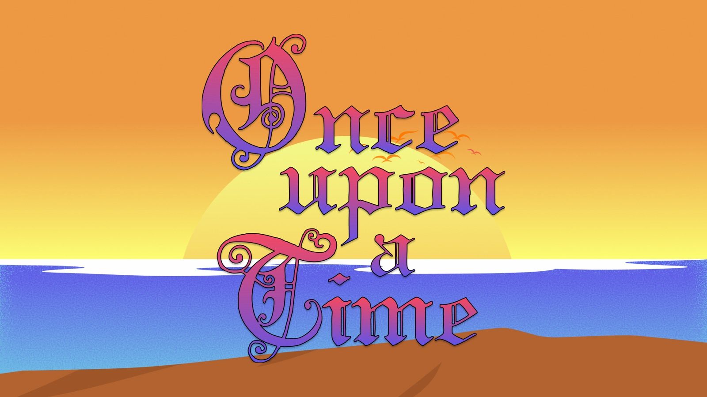
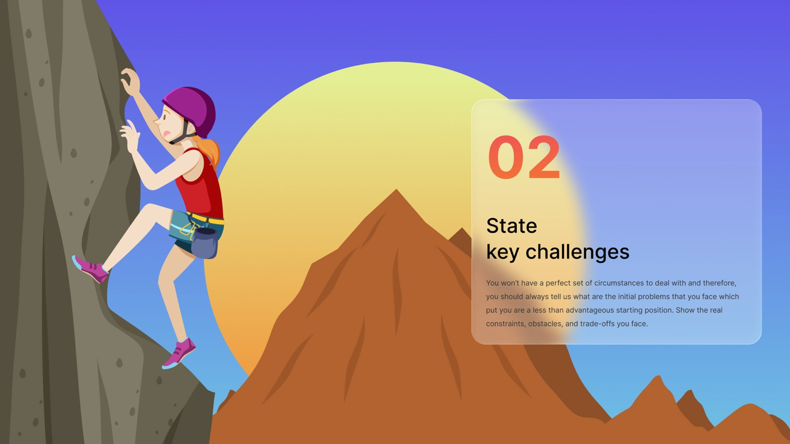

What is a Process Narrative? The story of a project told as a case study: its purpose, the challenges, when things got tough and how you recovered, and what changed, illustrated with real artifacts.
- Structure a case study as a story with a clear beginning, middle and end.
- Explain the purpose, the challenges, the hard moments and the lessons of a project.
- Show your process with the right artifacts, not just final screens.
- Write a scannable case study that a hiring manager can follow in a few minutes.
On this page

Context
Every good case study is a story. There's a hero (you and your users), a goal, obstacles, a moment when things went wrong, and an ending where something changed. A list of methods ("I did a survey, then a persona, then wireframes") is not a story, and nobody remembers it.
Nielsen Norman Group's guidance on portfolios says hiring managers want to understand how you work, so they can picture you on their team. Their case-study outline covers the problem, your role, how you reached the solution, whether it worked, the challenges and abandoned ideas, the impact, and what you learned. This exercise turns that outline into a narrative with four beats.
Goal / Learning Outcome
- Structure a case study as a story with a clear beginning, middle and end.
- Explain the purpose, the challenges, the hard moments and the lessons of a project.
- Show your process with the right artifacts, not just final screens.
- Write a scannable case study that a hiring manager can follow in a few minutes.
Main Exercise
Use the artifacts you catalogued and write the story in four beats.
1. State a clear purpose.

Explain what you set out to achieve, who you were designing for and why the problem matters. Include your role and the team. This anchors the whole case study and helps the reader understand the intention behind every decision.
2. State the key challenges.

You never start from perfect circumstances. Show the real constraints, obstacles and trade-offs: time, budget, access to users, technology, a vague brief. Then show how you reached a solution: the research and reasoning behind it.
3. Say when things got tough.

A film where the hero sails through is boring. Tell the reader when things got sticky: the test that failed, the idea you had to abandon, the feedback that stung. Then show how you recovered, with before-and-after evidence of what changed.
4. Reflect on the journey.

Show the impact on users and the business, and the insights and growth that shaped you as a designer. The reader wants to see how you made it through, and, more importantly, how it changed you.
Then build it:
- Write a one-line hook and a three-sentence summary for the top of the page.
- Draft each beat in a few short paragraphs.
- Place 2–3 artifacts in each beat, each with a caption that says what it shows and why it mattered.
- Cut. Use headings, short paragraphs and bold key points so it can be scanned.
- Read it aloud to a classmate. Where they get lost, rewrite.
Template
- 🪝 Hook and summary
- 🎯 1. Purpose: problem, users, role
- 🧗 2. Challenges: constraints and how you approached them
- 🌧️ 3. When things got tough: failure, recovery, before and after
- 🌅 4. Reflection: impact and what you learned
Tips
- Lead with the problem, not the method.
- Use "I" for what you did and "we" for the team, and be honest about which is which.
- Every image needs a caption. An uncaptioned journey map is just decoration.
- Show abandoned ideas: they prove you explored before you decided.
- Numbers make impact real: "task time down from 3 min to 50 s with 5 users".
- Your Sprint Retrospective is the raw material for beats 3 and 4.
AI Assist
Paste your draft into Claude and ask: "Read this as a hiring manager with three minutes. What's my role, what was the problem, and what changed? Where did you get lost?" If its answers are wrong, your story isn't clear yet.
Media
Checklist
☐ Wrote a hook and summary
☐ Covered all four beats: purpose, challenges, tough times, reflection
☐ Added captioned artifacts to each beat
☐ Cut it down and tested it on a classmate
Summary
A process narrative turns a project into a story: a clear purpose, real challenges, an honest account of when things got tough, and a reflection on what changed. Told this way, with the right artifacts, a case study shows not just what you made but how you think and work.